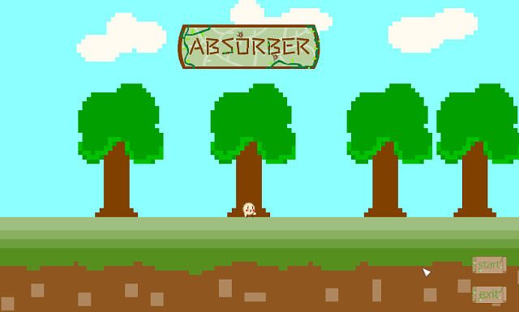
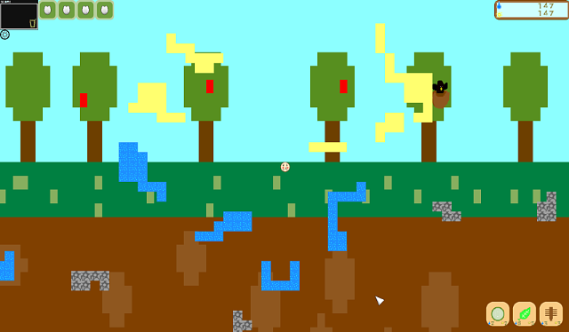

概要
私はN高等学校に所属する2年次の木本琢己です。
年齢は16歳でプログラミング歴は3年です。
扱える言語はjava,c#,c++が得意でGo,pythonは基本的なことはできます。
制作物は大きなもので1つ、小さなもので3つ程度で
大きなものは「absorber」という植物の視点になって成長させていくシミュレーションゲームです
私の本領はゲーム制作で、Unityやライブラリを用いたc++での開発をした経験があります
Absorberはc++でゲームライブラリを用いて開発しました。
GDI+やDirectXを使いクリアした時の画面を印刷機で印刷できるようにしました
現在制作しているのはUnityでプレイヤーがc++をベースとした言語を書くことでその通りにキャラクターが動く
海賊ゲームを制作しています。私はそこからパーサやASTなどの自作言語を作る上で大変貴重な経験をしました
現在興味があることはインターンでWeb系や組み込み,本格的なゲーム制作について学びたいと思っています
スキル
- c++(得意)
- c#(得意)
- python(基礎的)
- Go(基礎的)
- Java(得意：第一言語)
制作物
ここから私の制作したゲームの紹介をします

このゲームはAbsorberといって植物の目線で水や光を吸収して
根や茎、葉を生やし花びらを4つ集めたらクリアというゲームです。
ここで一番工夫したのは根と水資源が繋がっているかどうかをBFS(幅優先探索)で判定することで
BFSというアルゴリズムは知っていましたが、それを実践したのは初めてでした。

スタートするとチュートリアルが出るのですがここでは省きます。
チュートリアルをこえるとゲームスタートで右下がUIでここで根や茎、葉を選びます
そして、中央にあるたねの上下左右からドラッグ&ドロップで右上の光ゲージと水ゲージを消費しながら生やします
左上の四つ並んだものは花びらUIで花びらをマップの端から入手すると光って表示されます。